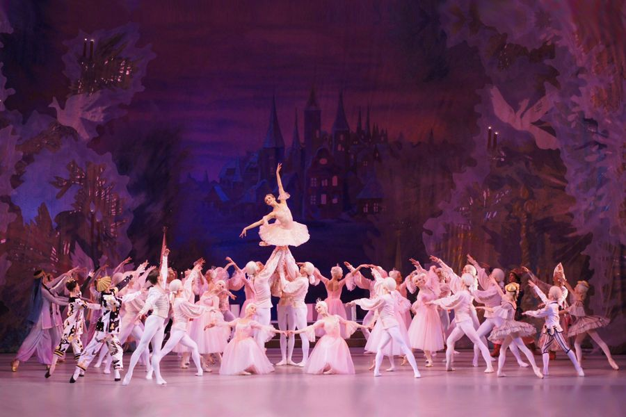
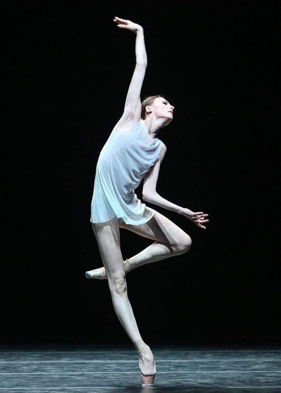

Klasični balet je bilo koji od tradicionalnih, formalnih stilova baleta koji isključivo koriste klasičnu tehniku baleta. Poznat je po
svojoj estetici i rigoroznoj tehnici (kao što su rad na vrhovima prstiju, rotacija nogu ka spolja i visoke ekstenzije), tečnim
preciznim pokretima i svojim nestvarnim kvalitetima. Tehnika baleta su temeljni principi kretanja tela i oblika koji se koriste
baletu. Karakteristična značajka tehnike baleta je rotacija nogu prema van iz kuka. Ovo je prvi put uvedeno u balet od strane kralja
Luja XIV. Postoji pet osnovnih položaja nogu u baletu, svi izvedeni s rotacijom nogu ka spolja i numerički nazvani od prve do pete
pozicije. Prilikom izvođenja skokova i letova, klasični baletni plesači teže ka izgledu kratkotrajnog lebdenja u zraku. Tehnika na
vrhovima prstiju je dio tehnike baleta koji se odnosi na rad sa špic patikama, pri čemu baletni plesač nosi celu težinu tijela na
vrhovima prstiju potpuno pruženih nogu. U profesionalnim kompanijama, špic patike se izrađuju tako da savršeno odgovaraju stopalima
plesača. Studenti obično uče terminologiju baleta, izgovor, značenje i precizan oblik tijela i pokret koji su povezani s pojedinim
igrača. Naglasak se stavlja na razvijanje fleksibilnosti i jačanje nogu, stopala i abdominalnih mišića.
Poznati klasični baleti:
"Don Kihot": koreografirao Marius Petipa
"Labudovo jezero": koreografirali Marius Petipa i Lev Ivanov
"Krcko Oraščić": koreografirali Marius Petipa i Lev Ivanov

Romantičan balet
Romantični balet je prije svega definiran kao era u baletu u kojoj su ideje romantizma u umjetnosti i književnosti utjecale na
stvaranje baleta. Romantično doba označilo je uspon balerine kao središnjeg dijela baleta, gdje su ranije dominirali muškarci
izvedbama. Stil kretanja za romantične balerine karakterizirao su meke, zaobljene ruke i nagib tijela prema naprijed. To je
ženi dalo tečan, vitki izgled. Pokreti nogu postali su složeniji zbog novih dužina baletskih suknji i rastućih standarda
tehničke veštine. Zapleti mnogih baleta bili su dominirani duhovnim ženama - silfama, vilama i duhovima, koji su zavladali
srcima smrtnih muškaraca i onemogućili im da žive sretno u stvarnom svijetu. Baleti romantičnog doba uglavnom su pisani i
koreografirani od strane muškaraca, pa je stoga uloga žena u tim baletima u velikoj meri odraz romantičnog pogleda i statusa
žena uopšte. Uloga ženske silfe bila je temelj romantike i uveliko je nadmašila uloge muškaraca u baletima. Romantično doba
bilo je obuzeto ljepotom i tajanstvenom duhovnim aspekatom ženstvenosti.
Romantično doba označava prvi put kada su plesači počeli uključivati rad na vrhovima prstiju u svoje časove i izvedbe izvan
osnovnih poza. Špic patike su prvotno bile implementirane kako bi se postigao efekt lebdenja plesača. Tehnika baleta od
baroknog do romantičnog doba predstavljena je fluidnim pomakom u kretanju, pri čemu su koraci iz baroknog doba bili i
izgubljeni i preobraženi. Doba je videlo sve veću učestalost rada na vrhovima prstiju na časovima. S uvođenjem rada na vrhovima
prstiju u časove, naglasak se sve više stavlja na jačanje stopala kako kod muških tako i kod ženskih plesača. Vežbe poput
kupova prvi su put naučene tokom ovog doba kako bi se plesači pripremili za snagu potrebnu za plesanje na neblokiranim špic
patikama na vrhovima prstiju.
Neoklasičan balet
Neoklasični balet je stil klasičnog baleta 20. veka koji se najbolje vidi u deelima Džordža Balanšina. Umetnost se vratila
jednostavnijem stilu koji podsjeća na klasično razdoblje, ali je hrabrija, odlučnija i slobodna od ometanja. Ovaj umetnički trend
poznat je kao neoklasicizam. Baletski koreograf koji je najbolje odražavao ovu novu, čistu estetiku bio je Bačanšin. Umjesto da se
odmakne od svoje klasične obuke, on je nadograđivao tradicionalni baletski vokabular. Proširio je tradicionalne baletske položaje,
igrao se brzinom i slobodom pokreta, te uključio nove položaje koji se tradicionalno nisu viđali u baletu. Balanšinov prvo delo u
neoklasičnom stilu bio je "Apollon Musegete", koreografiran 1928. godine za "Ballets Russes", uz muziku Igora Stravinskog. Kasnija
transformacija Apolla ilustrira Balanšinovu transformaciju kao koreografa. Kako se Balanšinov neoklasični stil razvijao, on je
stvarao sve više baleta bez zapleta, vođenih muzikom. Veliki scenografski setovi i tradicionalni baletski kostimi zamijenjeni su
čistim pozornicama i jednostavnim baletskim kostimima. Ovaj pojednostavljeni stil omogućio je pokretima plesača da postanu glavno
umetničko sredstvo, što je obeležje neoklasičnog baleta.
Poznati neoklasični baleti:
"Romeo i Julija": koreografirao Frederick Ashton
"Carmen": koreografirao Roland Petit
Savremeni balet

Savremeni balet je žanr plesa koji uključuje elemente klasičnog baleta i modernog plesa za svoje metode obuke i tehniku.
Koristi klasičnu baletnu tehniku i često i tehniku na vrhovima prstiju, ali dopušta veći raspon pokreta gornjeg dijela tijela i
nije ograničen strogim definisanim linijama i oblicima tela koji se nalaze u tradicionalnom, klasičnom baletu. Za nastanak
savremenog baleta zaslužan je ruski producent umjetnosti Sergej Djagilev.
Kako bi plesač mogao izvesti različite stilove, režim obuke postao je raznolikiji. Osim klasične tehnike, koja često uključuje
prepoznatljivu brzinu i stil Džordžs Balanšina za američke plesače, plesači također proučavaju i moderni ples. U savremenom
radu, kičma plesača treba biti fleksibilnija, a oni moraju razumeti kako da budu ukorijenjeni. To je suprotno klasičnom i
neoklasičnom baletu gdje je plesačima potrebno "uspraviti se" i gornji dio tijela je zategnut. Plesači prvo moraju steći
klasičnu baletsku obuku kako bi je nadogradili modernijom tehnikom i postali više raznovrsni.